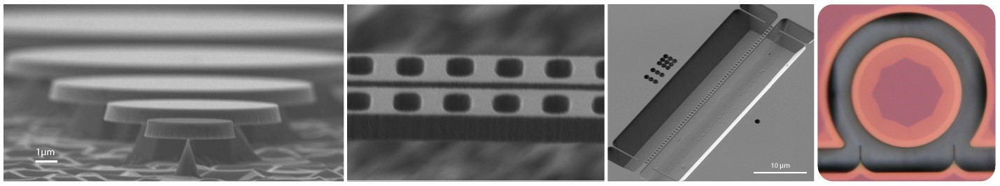

Lithium Niobate & Silicon Carbide Photonics
Functionalities of nanophotonic devices/circuits rely crucially on the properties of underlying device materials. We explore new material platforms with outstanding characteristics (electrical, optical, mechanical, thermal, etc.) for diverse applications, with current specific focus on silicon carbide and lithium niobate.
Lithium Niobate
Lithium niobate (LN) exhibits superior electro-optic, nonlinear-optical, acousto-optic, photorefractive, and piezoelectric properties, which have been widely employed in optoelectronics, nonlinear photonics, quantum photonics, and micro-electromechanics. LN has become a workhorse material system for the photonics industry and for photonics research and development. Conventional approaches for fabricating LN photonic waveguides is primarily based upon proton exchange or ion diffusion processes that provide weak optical wave guidance, leading to photonic structures with significant physical dimensions and limited capability of device/circuit engineering.
Scaling LN devices down to a micro/nanoscopic scale can dramatically enhance light–matter interaction which not only results in intriguing device characteristics that do not appear in a bulk LN crystal or a conventional LN waveguide, but also enables a variety of photonic functionalities beyond the reach of conventional means. However, developing LN-based nanophotonic circuits turns out to be nontrivial, primarily due to the significant challenge in fabricating high-quality LN photonic integrated circuits (PICs) and in making high-quality LN thin films. Recent advances in single-crystalline LN thin film technologies and LN device nanofabrication clear these obstacles. We are currently developing a variety of LN nanophotonic circuits for diverse nonlinear optical, electro-optic, and piezoelectric functionalities. With our effort, we hope to realize hybrid LN PICs by integrating all these functionalities on a single LN chip-scale platform, for broad classical and quantum photonic applications.

-
X. Lu, et al, Opt. Lett. 38, 1304 (2013).
-
X. Lu, et al, Appl. Phys. Lett. 104, 181103 (2014).
-
X. Lu, et al, Opt. Express 22, 30826 (2014).
-
J. Y. Lee, et al, Appl. Phys. Lett. 106, 041106 (2015).
-
X. Lu, et al, Sci. Rep. 5, 17005 (2015).
-
W. C. Jiang, et al, Sci. Rep. 6, 36920 (2016).
-
H. Liang, et al, Optica 4, 1251 (2017).
-
Y. He, et al, Opt. Express 26, 16315 (2018).
-
M. Li, et al, Laser & Photon. Rev. 13, 1800228 (2019).
-
X. Lu, et al, Opt. Lett. 44, 4295 (2019).
-
R. Luo, et al, Laser & Photon. Rev. 13, 1800288 (2019).
-
X. Lu, et al, Appl. Phys. Lett. 116, 221104 (2020).
-
J. Ling, et al Opt. Express 28, 21682 (2020).
Silicon Carbide
Silicon carbide (SiC) exhibits outstanding mechanical and electronic properties which have found broad applications in power electronics and structure mechanics. Although rarely used, SiC is an excellent material candidate for photonic applications, with very attractive material characteristics:
•A wide band gap with a transparent window covering from visible to mid infrared.
•A large refractive index which supports strong confinement of optical modes.
•A significant thermal conductivity for excellent heat management, particularly suitable for handling high optical powers.
•Superior mechanical properties ideal for making optomechanical structures.
•Significant optical nonlinearities, with great potential for nonlinear photonic applications.
•Unique point defect characteristics, an ideal candidate for quantum optical applications.
•A hardness and chemical inertness much greater than conventional optical materials, thus making it resistant to harsh environment.
SiC combines superior linear optical, nonlinear optical, point defect, electrical, mechanical, and thermal characteristics into one single material with mature wafer processing and device fabrication capability, thus representing a promising and ideal material system for broad nonlinear photonic, quantum photonic, and optomechanical sensing applications.
We developed strong expertise in material/wafer processing and advanced nanofabrication on various SiC polytypes such as 3C-SiC, 4H-SiC, 6H-SiC, and amorphous-SiC. We developed high-quality SiC microresonators and photonic crystal nanobeams. We explored significant nonlinear optical effects and optomechanical effects in SiC microresonators. With our effort, we hope to build a novel SiC photonic platform that is capable of offering diverse multi-functionalities integrated among electrical, optical, and mechanical degrees of freedom.
